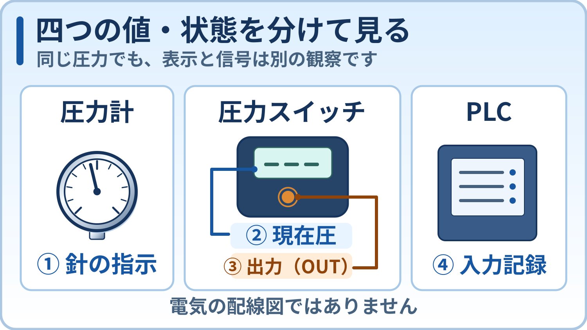
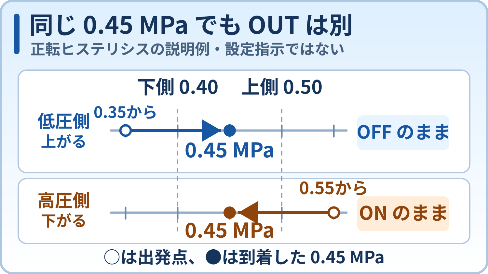
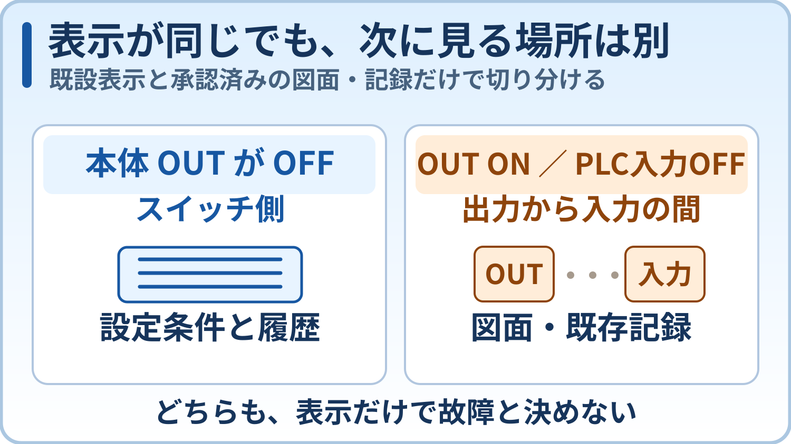

圧力スイッチと圧力計の違い
最終内容更新：
圧力計の針は 0.45 MPa。隣のデジタル圧力スイッチの表示も 0.45 MPa。でも、PLCの入力はOFFでした。PLCは設備の制御を行う装置です。ここでいう「PLCの入力」は、スイッチの信号を受ける場所で記録されたON・OFFの状態を指します。
圧力計は、取り付けた点の圧力を人が読む計器です。圧力スイッチは、測った圧力を使って設定条件を判定し、その結果を出力できる機器です。デジタル圧力スイッチには、現在圧力の数値表示とスイッチ出力を両方持つものもあります。

後輩二つとも同じ圧力を示すのに、どうしてPLCはOFFなんですか？

先輩圧力の「値」と、スイッチが出した「判定」は別だよ。まず本体の出力（OUT）がONかOFFかを見よう。どちらかによって、次に調べる場所が変わるよ。
四つの表示は何を見ている？

「圧力が出ている」「信号が入った」と一言で済ませると、どこを見た話かが混ざります。次の四つを、同じ設備動作の記録で照合します。
| 見る場所 | 何が分かるか | これだけでは分からないこと |
|---|---|---|
| 圧力計の指示 | 計器の取付点で読み取った圧力 | 別の点の圧力や出力がONかどうか |
| スイッチの現在圧表示 | スイッチ自身が測った圧力の表示 | 画面の数値だけでは選んだOUTの状態 |
| 本体のOUT表示 | スイッチが出す信号（OUT）のON・OFFを、本体がどう表示しているか | PLCまで電気信号が届いたか |
| PLC入力の記録 | スイッチの信号を受ける入力が、その時点でONかOFFか | 圧力の数値、機械が動く許可や安全の成立 |
機種によっては、ON・OFFの出力が2つあり、OUT1・OUT2と区別されています。どちらの出力がどのPLC入力につながるかは、設備の図面や入出力の対応表（I/O表）で確認します。盤外から見える表示と既存記録で比べ、片方しか見つからなければ、どちらの情報が足りないかをメモします。
圧力スイッチは数値も出力も持てる
デジタル機器を外観だけで「数値を出すから圧力計」「スイッチだからON/OFFだけ」と決めないでください。現在圧力の表示、しきい値で動くスイッチ出力、圧力に応じて連続的に変わるアナログ出力は別の機能です。必要な機能を、銘板の型式と出力仕様で確かめます。
たとえばSMCの ISE20A は、型式によって、スイッチ出力に加えてアナログ電圧やアナログ電流を出す仕様があります。同じような外観でも機能は同じとは限りません。必要な機能があるかは、銘板の型式をメーカー資料の「出力仕様」と照らし合わせます。
「0.45」と「OUT ON」は読み替えない
数値画面には、現在圧以外に設定値やピーク値などを表示する機器もあります。まず画面の数字が「いまの圧力」か「設定した値」かを確認します。ここからは、アナログ値の換算ではなく、ON・OFFを示すスイッチ出力に絞ります。
同じ測定点・同じ時点から比べる
レギュレータの前に圧力計、バルブの後に圧力スイッチがあれば、どちらも正しく働いていても、観察しているのは別の点です。配管の途中に分岐や弁がある場合も同じです。機器が近くにあることや、単位が同じことは、同じ点を測っている証拠になりません。
まず図面や既設の札から測定点を確認します。同じ点の比較なら、単位と同じ動作時点をそろえます。記録時刻がずれていた場合、短い圧力変動や機器・記録側の応答の差で一致しないことがあります。動作中の値を後から確認できない場合は、待機中の値で置き換えません。
取付位置の違いは、記録だけで切り分けられる
たとえば入口の圧力計が 0.50 MPa、分岐後のスイッチが 0.36 MPa なら、最初に確かめるのは「同じ点のつもりで比べていなかったか」です。別の点なら0.14 MPaを二つの機器の誤差とみなしません。機器の精度・測定条件を調べるのは、点と時点をそろえた後です。
0.45 MPaでも出力が異なる理由
同じ現在圧でも、そこまでの圧力の動きでOUTが違う場合があります。SMC ISE20Aの例で見てみます。圧力が上がって設定値を超えるとONになる動きが、ここでいう「正転」です。ONになる境目とOFFへ戻る境目の差を「応差（ヒステリシス）」といいます。例では、上側を 0.50 MPa、戻り側を 0.40 MPa とします。この幅があるため、圧力が少し揺れただけではONとOFFが交互に切り替わりにくくなります。

- 低い側から上がって0.45 MPa：直前はOFFで、0.50 MPaを超えていないためOFFのまま。
- 0.55 MPaでONした後、0.45 MPaに戻る：0.40 MPaまで下がっていないためONのまま。
同じ現在圧：0.45 MPa
上がるとき：0.50 MPaを超えるとON
下がるとき：0.40 MPaまで下がるとOFF
- 低い側から上がる0.35 → 0.45 MPaOFFのまま
- 高い側から下がる0.55 → 0.45 MPaONのまま
この例の数値は推奨設定や工場出荷値ではありません。出力を反転する設定、一定の範囲を判定する設定、切り替わりを遅らせる設定では、読み方が変わります。実設備では設定を変えずに、対象のOUT・設定の控え・直前の圧力履歴を照らし合わせます。切り替わりの境目は実機の資料を優先します。
後輩じゃあ、0.45 MPaでOUTがOFFでも、故障とは限らないんですね。
先輩そう。先にどちら側から来た値かを見よう。過去の値や出力モードが分からなければ、正常とも故障とも決めないよ。
どこから先が食い違うかを確認する

まず見る3点
- 場所と時点をそろえる。どこの圧力か。何が動いているときの値か。
- 本体のOUTを読む。対象はOUT1かOUT2か。ONだったかOFFだったか。
- 対応するPLC入力のON・OFFと並べる。設備の対応表と手元の記録で、同じ信号・同じ時点の組かを確かめる。
この3点をそろえると、次の表のどこから見始めればよいかが分かります。
| 見えたこと | 次に照らし合わせるもの | 確認の手がかり |
|---|---|---|
| 本体OUTがOFF、PLC入力もOFF | 現在圧と直前の推移、対象出力の設定控え、正転・反転などのモード。 | 圧力がどちら側から変化したかを履歴で読み、設定上OFFになる条件と比べる。 |
| 本体OUTはON、PLC入力記録はOFF | 本体のOUT番号とPLC側の入力番号が対応するか、記録時刻がそろうか。合っていても不一致なら、出力と入力の間の確認を担当者に依頼。 | 両方の表示と時刻をメモし、どこから一致しなくなるかを担当者に共有する。 |
| 本体OUTもPLC入力もON、装置は動かない | そのときの運転モードと運転許可の記録。たとえば、別の機器が動いている間は起動を止める条件（インターロック）も見ます。 | 通常運転の記録から、運転許可や停止条件のどこまで成立したかを確認する。 |
引き継ぐときは「どの装置のどの点か」「いつ・何の動作中か」「圧力と単位」「どのOUTか」「どのPLC入力がONかOFFか」の順にまとめます。たとえば入力の記録だけがあれば、「OUT1の状態は見えていない」と書けば次に見るものが伝わります。
値・判定・PLC入力は別に記録する
圧力計の指示、スイッチの現在圧、スイッチが判定したOUT、PLCの入力記録。別々の欄に残せば、設定・判定側を見るべきか、信号の伝達側を担当者へ引き継ぐべきかを整理しやすくなります。
OUT OFFも、0の表示も、残圧の安全確認ではない
OUTのOFFは設定上の判定であり、0の表示も設備全体に残圧がないことを示しません。このページは既存の表示や記録の読み比べです。確認のためだけの再運転、PLC入力の強制、設定の変更、端子や配管への接触、安全装置の無効化は行いません。保全は設備の承認済み手順に従い、担当者が供給遮断・残圧解放などを行った上で作業箇所の安全を確認します。
メーカー公式資料・技術参照元
公式資料確認：。設計・設定・保全では、使用している型式の最新版と設備の承認済み手順を優先してください。
- SMC ZSE20A(F) / ISE20A 取扱説明書：表示、出力モード、正転のヒステリシスと別のモード。
- SMC ISE20A 日本語取扱説明書（詳細）：9〜11ページの型式表示・品番体系と、27ページの正転出力の動き。
- SMC 一般用圧力計 Gシリーズ：人が読む圧力計の製品例。機種固有の使用流体・範囲・接続は個別仕様を確認。
- SMC 空圧機器の安全上のご注意：機器を取り外す前の供給遮断とシステム内部の排気。